Technical & product documentation
Manuals, feature guides, release notes, configuration references and in-app copy for live platforms.
- User & admin manuals
- Release notes
- UX writing
Writing for software teams since 2017: API references, a 66-page product manual, 250+ knowledge base articles — and the knowledge an AI support agent answers from.
Most people hire one of these. I have shipped all six, often for the same company in the same week — technical accuracy and a readable sentence are not separate skills.
Manuals, feature guides, release notes, configuration references and in-app copy for live platforms.
References, authentication flows, schemas, error handling and integration guides — written after building the integration.
Articles, case studies, internal learning guides, event decks and proposal editing with the fog taken out.
Post design and copy for five accounts across B2B digital services and UK trades — built to land on a phone screen.
Knowledge bases structured for retrieval, and prompting that keeps an existing agent answering from them.
SOPs, briefings, meeting notes, release coordination, vendor and inbox management — the layer that keeps a team moving.
Most of this work sits behind NDAs. What is listed here is accurate: the client, the dates, what I owned, and the outcome where one was measured. Samples on request.
NIST SP 800-61 aligned playbook for phishing response, written to be used by a SOC team mid-incident rather than read afterwards: detection, containment, eradication and post-incident review documented in full.
End-to-end integration documentation for three payment gateways, produced by wiring each one into working product prototypes first. For every gateway: an API reference page and a Markdown integration guide.
A multi-module booking platform documented end to end for the operational teams running live inventory: pricing logic, tax handling, booking workflows and configuration systems.
Worked with an existing ElevenLabs conversational AI agent deployed as customer support: built the knowledge base it answers from, then prompted the agent to use that knowledge clearly and consistently on live enquiries.
An end-to-end operations manual for a London-based, 24/7 emergency field-services company turning over roughly £4.5M a year, with a distributed network of engineers responding to live calls.
Documented a CRM-to-LLM lead-filtering integration for a UK D2C professional services company: architecture, authentication flows and the logic governing which enquiries are routed and which are dropped.
A structured Salesforce suite built to do three jobs at once: power an AI conversational agent, teach the internal team, and answer client questions during evaluation and onboarding.
250+ query-driven articles architected as a knowledge base rather than a library: every page answers a question a client or an agent would actually ask, across Google Ads, SEO and Local SEO.
Worked alongside Google's Teleperformance teams in Brazil and Milan to document Local Service Ads through its UK-only beta, helping local providers understand a product nobody had used before.
The first documentation system I owned end to end: product documentation, UX writing, help-centre architecture and integration docs for a live order and inventory platform.
It is where the documentation has to land now: knowledge an agent can retrieve, prompts that keep a conversation on brand, and the judgement to know what should stay human.
Where I have actually been employed, what I owned at each, and what changed while I was there. Client and contract engagements sit in the casebook above.
Owned documentation end to end for a company selling SaaS, CRM and marketing services into the UK and Europe — discovery, authoring, subject-matter review, publication and maintenance, with no team behind me.
First documentation role, and the one that set the pattern: take full ownership of the product's written surface, learn the workflow from the people running it, then write it down for the customer who has to use it alone.
Seven things I built for myself, not for a client. Browser extensions, web apps and one hackathon entry — made because I wanted to understand the tooling from the inside before writing about it.
Turns a screen recording into written steps, so a workflow can be documented while it is being performed.
Encrypted AI messaging for confidential documentation and critical incident reporting. Built for the AppMeDo Devpost hackathon.
Surfaces LinkedIn hiring posts from outside your network in a persistent side panel. No backend, no scraping account.
Writes tone-matched replies to Google, Trustpilot and TripAdvisor reviews for small businesses in under 30 seconds.
An experiment in whether video models can produce usable safety paperwork: construction-site footage in, structured compliance reports out.
A dashboard that makes hidden financial losses visible — inefficient loans, card misuse, poor tax planning — for the Indian market.
An interactive app for learning Tamil script — 247 characters, tracing practice, pronunciation audio and quizzes.
Platform records, not adjectives. Each block below is linked to the public profile it comes from, so anyone can check it.
Tools in profile: Burp Suite, Wireshark, Nmap, PhishTool, URLScan.io, Linux, Windows, macOS.
tryhackme.com/p/AbdulBasithh ↗

Trailhead badges, points and certification status live on the public Trailblazer profile — the record there is the source of truth.
salesforce.com/trailblazer/abdulabdu ↗Fourteen certificates across security, marketing and teaching, listed with the issuer's own mark. Where the certificate was awarded through a job simulation, the sponsoring company is named alongside Forage.
Tools change. What does not: a style guide applied consistently, a schema read correctly, and a sentence that says one thing.
Available for senior and lead technical writing, API documentation, knowledge base work, developer advocacy, editorial and operations support — remote, hybrid or on-site, worldwide.
Five accounts.One voice system.
B2B digital services on one side, UK trades on the other. Different audiences, same job: a post that reads in two seconds and sounds like the company, not the template.
UTDS Optimal Choice
@utds_optimal_choiceDigital solutions, web development, CRM and SEO — visual posts and copy for a professional B2B brand selling to global clients.
View account ↗Onsite Contractors & Plumbing
@onsite_contractors_plumbingService highlights, emergency response messaging and customer-facing copy for a London plumbing and drainage contractor.
View account ↗Scaffolding Services Kilmarnock
@scaffoldingserviceskilmarnockPost design and captions for a Scottish scaffolding contractor: the work itself, made to look like the work itself.
View account ↗Great Britain Services
@greatbritainservicesMulti-service brand content built on clarity and trust, with copy that works for a customer comparing three quotes.
View account ↗Plumbing Immediately
@plumbingimmediately24Urgency-led posts and call-out messaging for a 24-hour service where the first line has to do the selling.
View account ↗Editorial work runs alongside this: technical articles for utds.al, internal learning guides, AI-at-work event decks and proposal editing for client-facing teams.